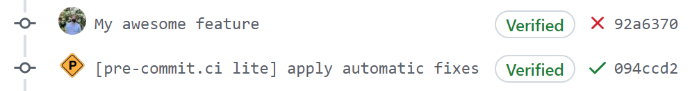

install the GitHub Application on the relevant repositories
add the GitHub action to your workflow as the last step in your job:
- uses: pre-commit-ci/lite-action@v1.0.3
if: always()
note: the step must have either the default name or contain the text
pre-commit-ci-lite. the application uses this to find the right workflow.
note: the step must be contained in a job which is either by itself in the workflow or is the last job to finish in the workflow.
pre-commit.ci lite only provides auto fixing of PRs, but allows the flexibility of using GitHub Actions as a runner.
feature | full | lite |
auto fixing PRs | ✅ | ✅ |
periodic automatic hook updates | ✅ | |
speed | ✅ | |
arbitrary setup ( | ✅ | |
other code modification tools | ✅ |
technically pre-commit.ci lite works for any code modification, though it was
built with pre-commit in mind. here is an example workflow:
on:
pull_request:
push:
branches: [main, test-me-*]
jobs:
main:
runs-on: ubuntu-latest
steps:
- uses: actions/checkout@v3
- uses: actions/setup-python@v4
with:
python-version: 3.x
- uses: pre-commit/action@v3.0.1
- uses: pre-commit-ci/lite-action@v1.0.3
if: always()
pre-commit ci will skip pushes made by bots to prevent infinite loops.
to trigger an autofix in that scenario, set up a labeled trigger:
--- a/.github/workflows/pre-commit.yml
+++ b/.github/workflows/pre-commit.yml
@@ -1,13 +1,19 @@
on:
pull_request:
+ types: [labeled, opened, reopened, synchronize]
push:
branches: [main, test-me-*]
jobs:
main:
+ if: "github.event.action != 'labeled' || github.event.label.name == 'pre-commit ci run'"
runs-on: ubuntu-latest
steps:
- uses: actions/checkout@v3
+ - run: gh pr edit ${{ github.event.number }} --remove-label 'pre-commit ci run'
+ if: github.event.action == 'labeled' && github.event.label.name == 'pre-commit ci run'
+ env:
+ GH_TOKEN: ${{ github.token }}
- uses: actions/setup-python@v4
with:
python-version: 3.x
pre-commit.ci will always be free for open source repositories.
for private and organization repository support see the GitHub Marketplace.
for single-tenant or larger installations, contact info@pre-commit.ci.